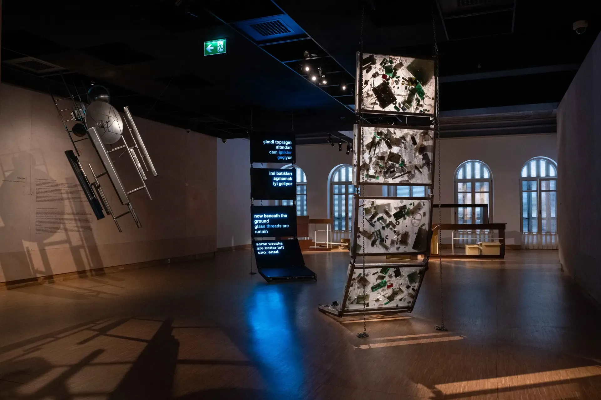

26012026
hep seninleydim / I was always with you
InstallationSALTUlya Soley, Deniz İnal, Serap Kaçmaz, Ali Haydar Ararut, Melisa Karataş- About
- Installation of epoxy resin panels encapsulating telecommunication hardware, screens with poetry and a base station sculpture, drawing on the 1679 cipher manuscript Lettres Muettes and on Istanbul's mobile network infrastructure, part of the Urban Surveillance Bureau series.
- Place
- Beyoğlu, Istanbul
- Shown
- 22.04.–23.08.2026Breaking Through a Dam: Memory, Land, Archive and Being with Place (Barajdan Sızanlar), SALT Beyoğlu, Istanbul, curated by Gülce Özkara
- Links
- Original ↗

Press
- 21.08.2026What's on: From the 1950s to the future ↗Istanbul, etc.
- 20.08.2026There is a Crack in Everything: "Breaking Through a Dam" at Salt Beyoğlu ↗ArtAsiaPacific
- 11.08.2026Breaking through a dam ↗Feltouch
- 15.05.2026Salt'ta 'Barajdan Sızanlar' ↗Decollage Art Space
- 25.04.2026Memory leaking through a dam: Land, archive and being with place ↗bianet
- 22.04.2026Breaking Through a Dam | Salt (exhibition page) ↗Salt
- 22.04.2026Breaking Through a Dam ↗KoozArch
- 22.04.2026"Barajdan Sızanlar" sergisi, Salt Beyoğlu'nda sanatseverlerle buluştu ↗Anadolu Ajansı
- 21.04.2026Salt Beyoğlu explores the 'untranslatable' landscapes of the Middle East ↗Artdaily
- 20.04.2026Breaking Through a Dam ↗e-flux